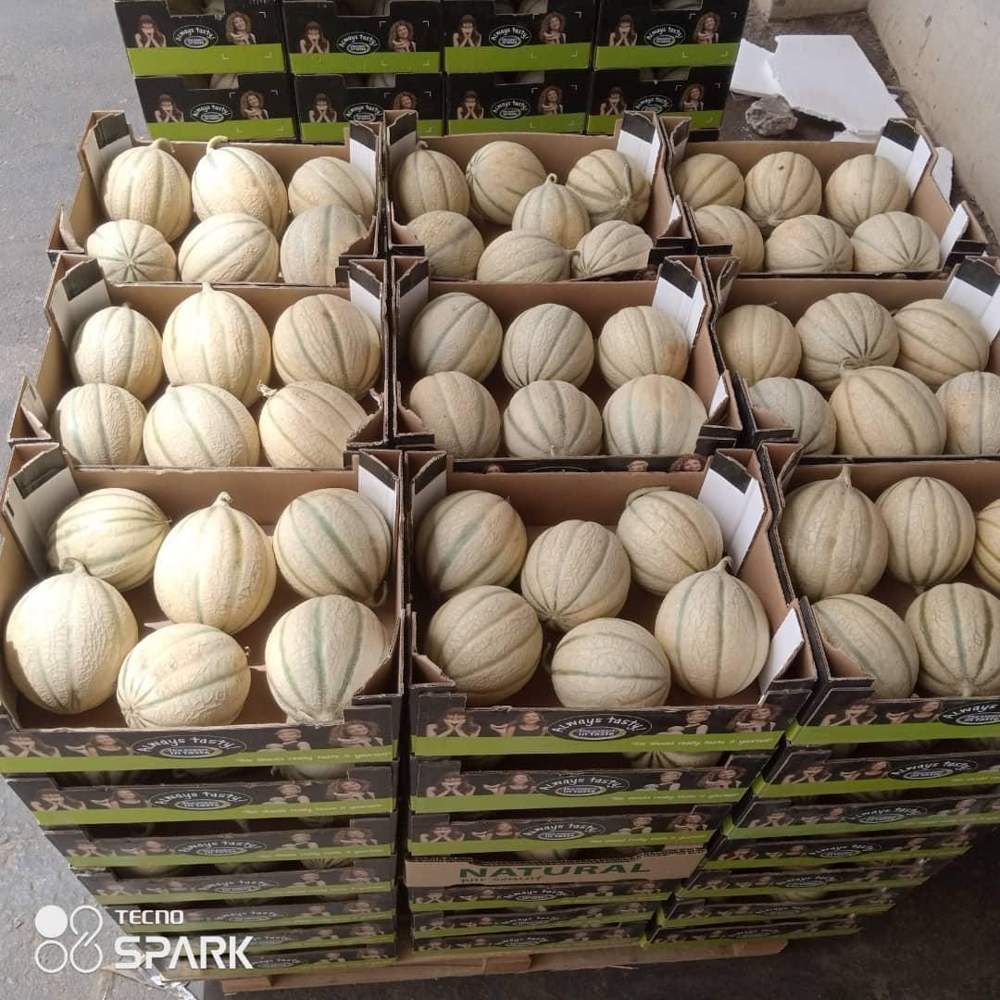
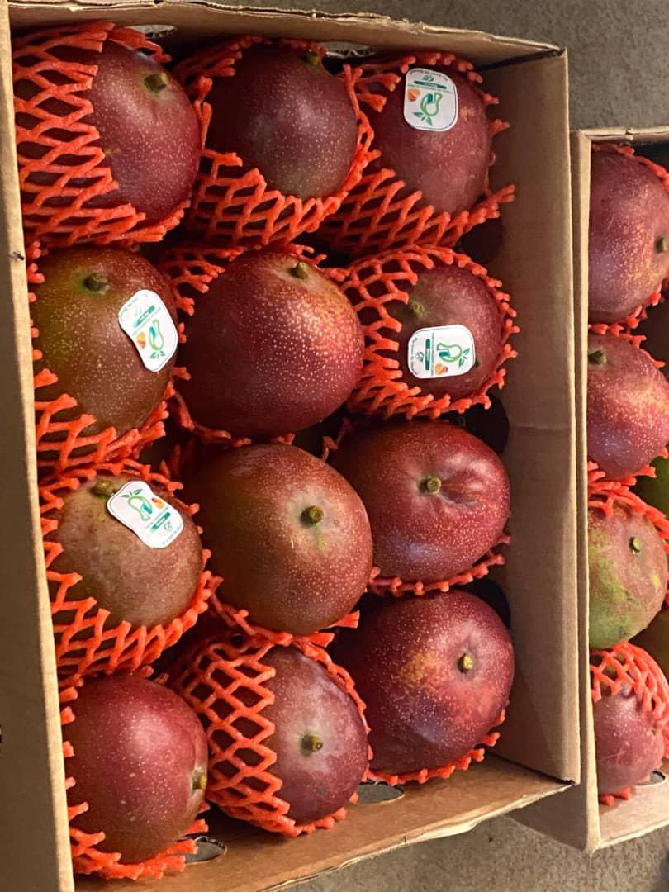
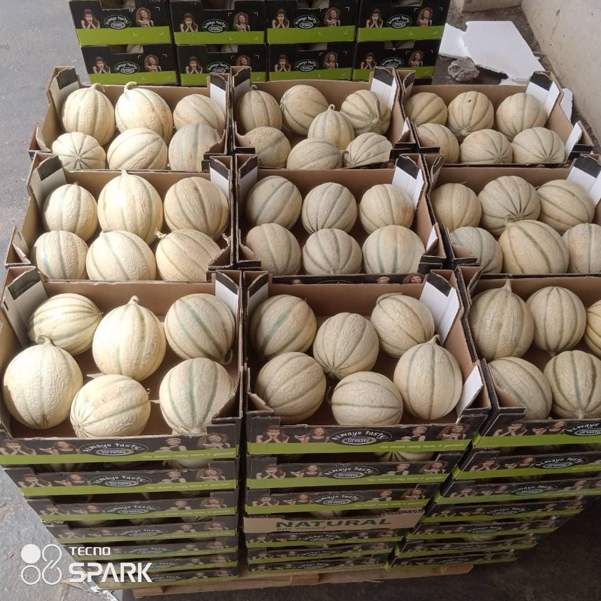
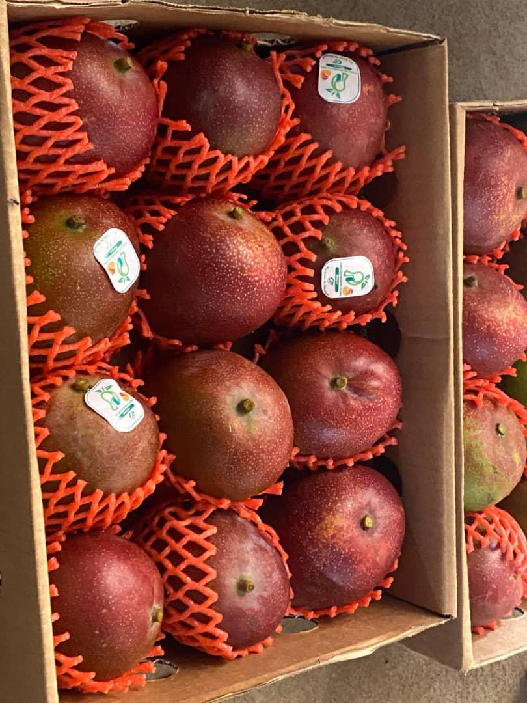

Porte du Progrès Global
Porte du Progrès Global
Porte du Progrès Global est une entreprise sénégalaise spécialisée dans l’exportation de fruits et légumes frais. Nous travaillons en partenariat avec des producteurs locaux afin de fournir des produits de haute qualité, respectant les normes internationales, destinés aux marchés européens, maghrébins et moyen-orientaux.
Porte du Progrès Global is a Senegalese company specialized in the export of fresh fruits and vegetables. We work closely with local farmers to deliver high-quality products that meet international standards for European, North African, and Middle Eastern markets.
Qualité – Traçabilité – Fiabilité Quality – Traceability – Reliability Contactez-nous
Slide du jour
 



Nos Produits
Our Products
Nous exportons une large gamme de fruits et légumes frais, soigneusement sélectionnés, triés et conditionnés selon les standards internationaux.
We export a wide range of fresh fruits and vegetables, carefully selected, graded, and packed according to international standards.
Mangue Kent
(Produit phare) - Saison: Mai-Juin
Calibre: Extra, Ire classe
Conditionnement: Cartons 4-6kg
Haricot vert
Saison: Toute l'année
Calibre: Longueur 12cm+
Conditionnement: Cartons 5kg
Aubergine
Saison: Oct-Déc
Calibre: 200-300g
Conditionnement: Cartons 6kg
Gombo
Saison: Toute l'année
Calibre: 8-12cm
Conditionnement: Cartons 5kg
Melon
Saison: Fév-Mai
Calibre: 2-4kg
Conditionnement: Unités
Fraise
Saison: Nov-Mars
Calibre: 20-25g
Conditionnement: Barquettes 250g
Citron
Saison: Toute l'année
Calibre: 120-180g
Conditionnement: Cartons 10kg
À Propos
Notre Entreprise
Our Company
Fondée à Thiès par Fallou Ndiaye, Porte du Progrès Global a pour objectif de valoriser les richesses agricoles du Sénégal. Statut : Entreprise individuelle (NINEA + RCCM).
Founded in Thiès by Fallou Ndiaye, Porte du Progrès Global aims to promote Senegal’s agricultural potential. Status: Individual enterprise (NINEA + RCCM).
Mission: Valoriser les produits agricoles sénégalais, soutenir les producteurs locaux et fournir des produits frais de qualité internationale.
Mission: Valorize Senegalese agricultural products, support local producers and supply international quality fresh products.
Notre Vision
Our Vision
Devenir un acteur de référence dans l’exportation horticole en Afrique de l’Ouest.
To become a leading horticultural export company in West Africa.
- Marchés: Europe (France, Belgique, Italie), Maghreb, Moyen-Orient
- Localisation: Thiès – Sénégal
PORTE DU PROGRE GLOBAL – Pourquoi rejoindre notre coopérative ?
Notre objectif
Nous créons une coopérative agricole nationale pour permettre aux jeunes de toutes les régions de cultiver ensemble, d’acheter moins cher, de vendre mieux et de se former.
Avantages pour chaque membre
- Soutien mutuel : conseils et partage de techniques agricoles.
- Achats groupes : semences, engrais et matériel à prix réduits.
- Commercialisation collective : vendre ensemble pour obtenir de meilleurs prix.
- Formation et encadrement : apprendre des techniques modernes.
- Accès au financement : banques, ARM, ONG favorisent les coopératives.
- Développement national : contribuer à l’agriculture sénégalaise et à l’emploi des jeunes.
Fonctionnement simple
- Chaque membre garde sa terre.
- Les décisions se prennent ensemble lors des réunions ou en ligne.
- Petite cotisation pour le fonctionnement (entretien, logistique).
- Bureau élu pour gérer l’administration et le suivi.
Flexible et national
Même si tu es à Thiès, tu peux collaborer avec des jeunes du Walo, Dakar, Touba, Mbour… Chacun cultive dans sa région mais bénéficie de la force du groupe.
Rejoins-nous !Processus d’Exportation
Export Process
Notre processus garantit la qualité à chaque étape.
Our export process ensures quality at every stage.
Incoterms: FOB – CIF – EXW[file:1]
Pourquoi Nous Choisir
Why Choose Us
- Produits frais et traçables
- Respect des normes internationales
- Expérience en exportation
- Relations directes avec producteurs
- Logistique maîtrisée
- Prix compétitifs
Clients: Importateurs, Grossistes, Supermarchés, Distributeurs, Restaurants et Hôtels
Contact
Vous êtes importateur, distributeur ou grossiste ? Contactez-nous pour une demande de devis ou un partenariat.